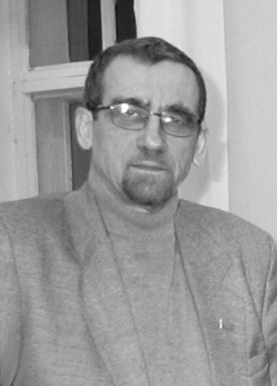

ВСЕ СЛОВА ЕЩЕ НЕ ПЕПЕЛ
В январе прошлого года скончался известный тверской журналист и общественный деятель Георгий Харитонов, один из основателей общественного фонда по розыску и увековечению памяти павших защитников Отечества «Жить и Помнить». Прошел год.
Фонд носит имя Георгия Васильевича. Какие замыслы Г.В. Харитонова оказались жизнеспособными, какие идеи осуществляются?
Лучшие качества историка и публициста Георгия Харитонова воплотились в двух проектах. Один из них — создание уникальной «Книги памяти солдат Великой Отечественной войны, считающихся пропавшими без вести» (электронная версия). Второй проект — создание некоммерческого гуманитарного благотворительного фонда «Жить и помнить», сотрудники которого занимаются розыском и увековечением памяти жертв Второй мировой войны и, в частности, поиском сведений об уроженцах Тверской губернии, жителях Калининской области, пропавших без вести или сгинувших в плену.
Работа по установлению судеб советских военнопленных началась 1 сентября 2004 года совместно с объединением «Саксонские мемориалы», а затем и Народным союзом Германии по уходу за военными могилами.
Тысячам россиянам из разных краев областей Георгий Васильевич помог узнать о судьбе и месте захоронения их погибших родственников. Он способствовал восстановлению исторической справедливости, сотрудничал с ветеранскими организациями и общественной организацией «Дети-сироты войны».
ДЕТИ ПОГИБШИХ ЗАЩИТНИКОВ
Председатель комитета межрегионального союза общественных объединений «Дети погибших защитников Отечества в Великой Отечественной войне» Раиса Богатырева говорит, что многие предложения Георгия Харитонова, интеллигента «до мозга костей», легли в основу деятельности этого комитета.
С 26 ноября по 2 декабря во всех районах областного центра прошли отчетно-выборные собрания членов Тверской городской общественной организации «Союз детей-сирот войны». Председатель правления союза Раиса Богатырева, присутствовавшая на собраниях в Пролетарском районе и в Заволжье, рассказала, что еще в июле Комитет по делам ветеранов Госдумы разослал письма во все регионы России с просьбой произвести учет детей солдат, погибших за Родину.
В ноябре Раиса Богатырева была на приеме у губернатора Дмитрия Зеленина. По итогам беседы губернатор поручил председателю департамента соцзащиты Андрею Гагарину и председателю комитета внутренней политики Андрею Чернышеву провести учет детей погибших воинов. Вскоре из департамента социальной защиты населения Тверской области пришло письменное заверение, что будет выполнен учет детей погибших воинов. Их, по предварительной оценке, проживает в Тверской области примерно 13 тысяч человек.
С 26 ноября по 2 декабря во всех районах Твери успешно прошли отчетно-выборные собрания членов ТГОО «Союз детей-сирот войны». А в начале декабря Раиса Богатырева и ее коллега Валентина Панова по приглашению председателя рабочей группы, созданной для внесения поправок в федеральный закон о ветеранах, в очередной раз побывали в профильном комитете Госдумы. Но процедура внесения поправок недопустимо затягивается. Поэтому члены комитета межрегионального союза общественных объединений «Дети погибших защитников Отечества в Великой Отечественной войне» предложили каждому участнику ТГОО «Дети-сироты войны» написать заявление в Конституционный суд с требованием признать детей солдат, погибших за Родину, членами семьи погибшего (вот такой парадокс) и восстановить действие закона о социальной поддержке членов семей погибшего воина. Речь идет также о том, чтобы признать детей погибших защитников Отечества жертвами фашизма как пострадавших морально, материально и физически.
Сообщается, что Андрей Гагарин на ближайшей встрече с руководителями структур соцзащиты муниципальных образований собирается предложить скорректировать планы подготовки к празднованию 65-летия Великой Победы, отразив в них деятельность детей погибших защитников Отечества. От комитета внутренней политики они ждут, что им за погибших отцов вручат медали «65 лет Победы в Великой Отечественной войне». Ведь многие защитники Отечества погибли, не успев получить ни одной медали. Кроме того, дети погибших защитников Отечества надеются на то, что власти профинансируют их поездки к местам гибели и захоронения их отцов. Могилы многих отцов находятся и в Германии, в бывших лагерях военнопленных и в концлагерях. Точное их местонахождение стало известно только благодаря сотрудничеству Георгия Харитонова с руководством Народного союза Германии по уходу за военными могилами.
ЗАРУБЕЖЬЕ
Не так давно, в октябре прошлого года, нынешние руководители фонда «Жить и помнить», в том числе Александр Терентьев, познакомили журналистов с настоящей сенсацией, ставшей неожиданностью даже для специалистов, прочно связанных с поисковым движением. В Германии официально подтверждено захоронение 82 наших земляков, умерших в немецком плену всего за 10 дней до Победы. Это жертвы концлагеря, который при разделе территории в 1945 году оказался в американском секторе. Почти 65 лет немецкие благотворительные организации ухаживали за могилами, параллельно ведя поисковую работу и восстанавливая поименный список захороненных.
На весну 2010 года запланирована поездка туда делегации из Тверской области.
К слову, областной комитет по туризму, курортам и международным связям разрабатывает межведомственную программу по развитию нового сектора туристического бизнеса на юго-западе региона — на Ржевско-Вяземском плацдарме времен войны. Поисковые отряды, а также подразделения Народного союза Германии по уходу за военными могилами ежегодно находят останки сотен солдат под Белым, Ржевом и Зубцовом.
Предполагается создать несколько тематических маршрутов для туристов — таких как «Долина смерти», «Сашка идет в госпиталь», «Сталин под Ржевом» (в годы войны он лишь однажды выезжал к линии фронта — именно сюда).
ЗА ПРЕДЕЛАМИ ОБЛАСТИ
Уже четыре года руководство объединения «Саксонские мемориалы» сотрудничает с регионами России напрямую. Администрации Тверской, Курской, Смоленской областей, правительств Татарстана и Калмыкии в своих регионах давно курируют международный научно-гуманитарный проект: «Советские и немецкие военнопленные и интернированные». Стартовал он в 2000 году совместными усилиями МВД России, Германии, Украины и Белоруссии. Главная его цель понятна — дать родственникам погибших солдат, до сих пор считающихся пропавшими без вести, информацию об обстоятельствах гибели людей, о местах их погребения. Затем общее руководство проектом взяло на себя объединение «Саксонские мемориалы». Сегодня в базе данных «Саксонских мемориалов» есть информация на 600 тысяч русских пленных воинов, она постоянно дополняется.
В Челябинске одна из первых в стране общественных организаций сирот — детей погибших защитников Отечества называется эмоционально и очень точно: «Память сердца». Возглавляет ее Виктор Гладышев, потомственный казак и сын солдата, погибшего за Родину в Великую Отечественную войну. Он не раз отмечал роль в деле сотрудничества с объединением «Саксонские мемориалы» покойного Георгия Харитонова: «Он одним из первых в стране задался целью наиболее полно увековечить память жертв Второй мировой войны. Он инициатор движения «Жить и помнить», прямого взаимодействия с историками Германии из «Саксонских мемориалов».
Тут уместно вспомнить о давней книге Харитонова о школе-интернате в городе Иванове, знаменитом Интердоме, в котором воспитывались дети из разных государств, в том числе революционеров Испании и Китая. Эта издание стало настольным для многих видных деятелей дальнего зарубежья.
ТВОРЧЕСКОЕ НАСЛЕДИЕ
Харитонов завершил, но не успел опубликовать книгу о Лидии Базановой, исследование о Ржевском Дулаге. Ждет публикации и «Книга памяти».
Георгий Харитонов сотрудничал с профессорско-преподавательским составом Тверского филиала МЭСИ, в котором его вдова Надежда Буянова занимает пост заместителя директора.
Она и доцент ТФ МЭСИ Светлана Федосова сообщают, что творческое наследие Г.В. Харитонова насчитывает многие тысячи страниц. Ждут научной экспертизы и дальнейшей публикации рукописи о новгородской феодальной республике, о волосовской археологической культуре, о культуре боевых топоров (в соавторстве с Дмитрием Крайновым), по деятельности органов управления в годы Великой Отечественной. Тем было много. И есть надежда, что многое будет издано.
Игорь Мангазеев, газета «Вече Твери»
От редакции: В дни Памяти Георгия Васильевича пришло письмо из Башкирии. Написал его один из руководителей Учалинской районной организации «Память сердца. Дети погибших защитников Отечества» Газизов Альберт Хадыевич. Его отец Газизов Х.М. воевал на тверской земле и погиб 3 октября 1942 года у дер. Векшино Зубцовского района. Альберт Хадыевич был лично знаком с Георгием Васильевичем. Две строчки из этого письма: «Мне очень жаль, что он слишком рано ушел из жизни. Становится очень больно, когда хорошие люди так рано уходят навсегда».
|